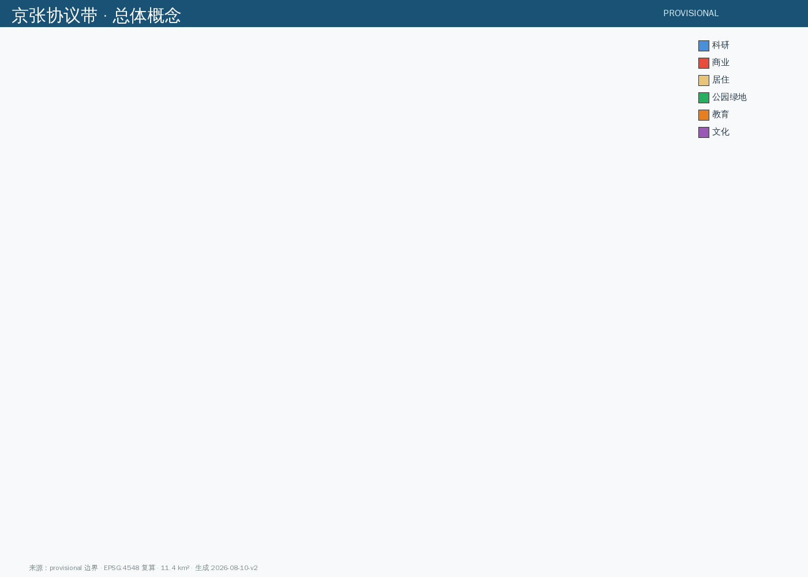
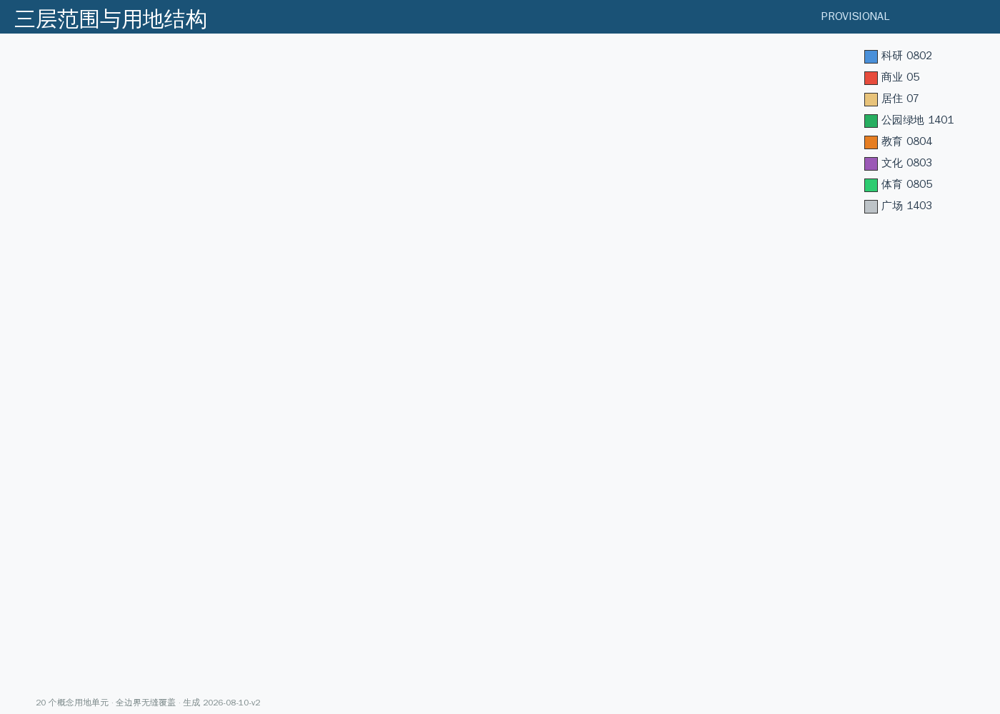
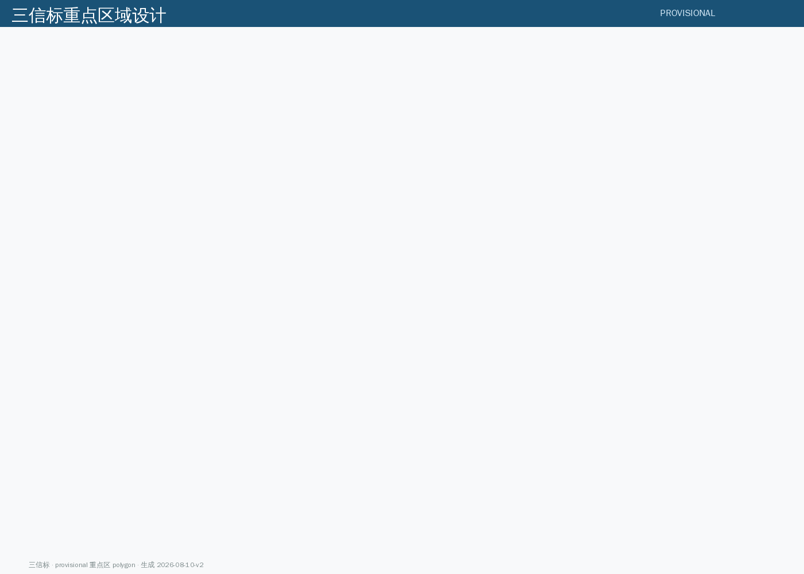
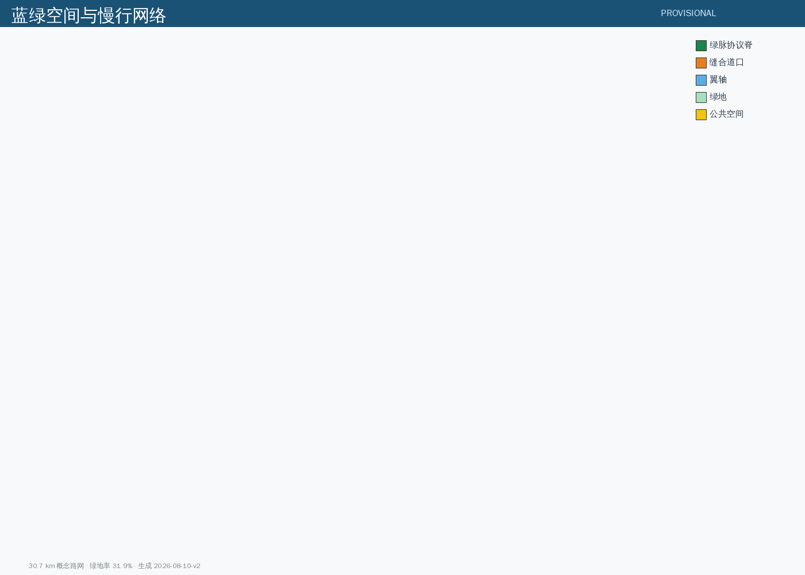
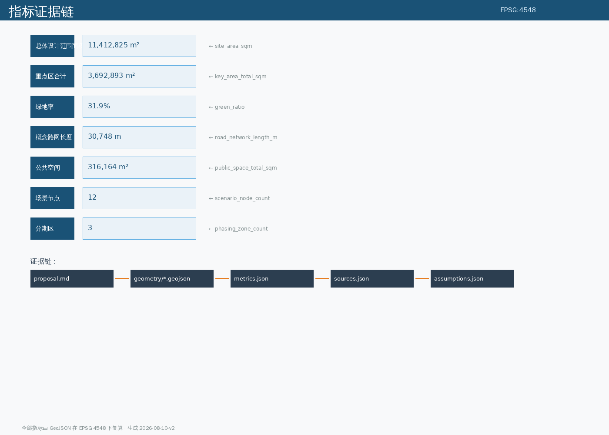

把 AI 城市设计写成可审计的公共协议
PROVISIONAL 边界EPSG:4548 复算Youmu76 · Yeche Hermes Agent
official_boundary=false，不可作为官方红线或精确面积依据。官方 polygon 发布后整链重算。本方案为开放共创概念建议，不替代正式规划，不构成政府审定结论。
核心命题：主流方案问「AI 能给这条带带来什么」，本方案反写——「这条带如何约束 AI」。京张铁路是中国第一条自主标准干线铁路；京张协议带应成为第一个城市级 AI 公共协议实验场。
空间结构：一脉（9公里绿脉协议脊）· 三信标（众智园可信算力 / 原点开源协议 / 大钟寺人机共处）· 两翼（中关村科技服务 / 小月河场景赋能）· 五处缝合道口 · 十二个协议场景节点。
元符号：詹天佑「人」字形线路 → 折返 = 可回退；协议环 = 可审计。


三层范围：统筹研究范围（约 43.6 km²）→ 总体设计范围（约 11.4 km²）→ 重点区域范围（约 368 公顷）。
用地分区：20 个概念用地单元，全边界无缝覆盖：科研（众智园研发西区/主区/原点开源社区）、公园绿地（绿脉五段）、商业（大钟寺智能消费街区）、居住（南段/中段/原点人才住区）、教育（原点高校协同区）、文化（协议文化中心）、体育（AI活力运动公园）、广场（众智园开放广场）。

全栈验证线 + 折返治理闸门；实验组团如编组股道并列布置；透明测试界面。协议动作：每个验证环节输出「验证协议报告」。
近校策源、开源转化；80-120米小街坊「西转化、东生活、轴上开源」。协议动作：开源发布广场举行《京张开源协议》签署仪式。
四象限站城客厅；智能原生消费与商务。协议动作：协议广场设「人机共处观察点」，定期发布共处报告。

交通慢行：概念路网约 30.7 km：绿脉协议脊 + 五处缝合道口（东西缝合）+ 两翼服务轴。
蓝绿公共空间：绿地率约 31.9%（3.64 km²）；公共空间约 31.6 公顷：三信标广场、南北门户广场、协议亭；公共空间组件库（协议亭/信标柱/折返凳/数据地砖）。
建筑：概念建筑基底团块（AI 研发/实验室/孵化器/混合功能/教育/居住等类型），仅作指标演示，非法定设计深度。
更新项目：U-01 绿脉协议脊贯通工程 / U-02 五处缝合道口 / U-03 众智园全栈验证线 / U-04 原点开源广场 / U-05 大钟寺协议广场 / U-06 协议碑与朝圣地标群。
| 期 | 范围 | 重点 |
|---|---|---|
| 一期 | 南段信标启动区 | 大钟寺 + 南段绿脉 + 协议碑 |
| 二期 | 中段共生成长区 | 原点社区 + 缝合道口 |
| 三期 | 北段全栈创新区 | 众智园 + 两翼服务完善 |
| 编号 | 场景 | 空间节点 | 协议等级 |
|---|---|---|---|
| P-01 | 无人配送慢行走廊 | 绿脉南段 | 可回退试点 |
| P-02 | 城市 AI 评测场 | 众智园 | 全栈验证 |
| P-03 | 开源发布广场 | 原点社区 | 开源协议 |
| P-04 | 企业服务 Copilot 路由 | 大钟寺 | 人类复核 |
| P-05 | AI 文化导览「协议解说线」 | 绿脉全线 | 数据最小化 |
| P-06 | AI+医疗健康服务导航 | 原点社区 | 人类复核 |
| P-07 | AI+教育伴学街区 | 原点社区 | 数据最小化 |
| P-08 | 智能原生消费街区 | 大钟寺 | 收益共享 |
| P-09 | 公共安全运营评审点 | 众智园 | 全程留痕 |
| P-10 | 人机共处观察点 | 大钟寺 | 人类复核 |
| P-11 | 数据回馈站 | 小月河翼 | 收益共享 |
| P-12 | 全球开发者协议共创站 | 中关村翼 | 开源协议 |

总体设计范围 11,412,825 m² 绿地率 31.9% 公共空间率 2.77%
证据链：proposal.md → geometry/*.geojson → metrics.json → sources.json → assumptions.json。
第一轮自主（1909）：中国人自主设计第一条干线铁路，确立自己的工程标准。第二轮自主（2026+）：中国人自主建设第一个城市级 AI 公共协议实验场，确立 AI 与城市的相处标准。铁轨是 20 世纪的基础设施，协议是 21 世纪的基础设施。
| 任务 | 覆盖 |
|---|---|
| agent.1 总体概念与命名 | 京张协议带 + 三信标命名体系 + Logo 方向 |
| agent.2 AI 创新生态 | 8 个全球案例转译 + 三信标分级协议生态 |
| agent.3 AI+ 场景 | 12 张场景卡 + 3 个测试验证场景 + 5 类用户画像 |
| agent.4 公共空间与朝圣地标 | 协议碑/信标塔/共处观察点 + 荣誉墙 + 组件库 |
| agent.5 文化叙事 | 「从自主铁路到自主协议」两轮自主叙事 |
| agent.6 活动与运营 | 协议节 + 开源共建周 + 开发者协议共创计划 |
自检状态：finalize_submission 已通过（package_state=ready_for_review），self_check 运行中，确定性校验/空间审查/视觉审查/专业证据审查四项门禁待全 PASS。
来源：资格预审公告 [source:OFFICIAL-ANNOUNCEMENT]、Agent 任务书 [source:AGENT-TASKBOOK]、场地资料包 [source:SITE-PACKAGE]、临时边界 [source:BOUNDARY-SOURCE]、海淀 1+X+1 产业体系 [source:HAIDIAN-1X1]、全球公开案例 [source:GLOBAL-CASE-PUBLIC-REFS]、OSM [source:OSM-BASE]。
假设：ASM-001~002 边界为 provisional；ASM-003~005 用地/建筑/道路为概念；ASM-006 全球案例为背景；ASM-007 法定控制指标待官方；ASM-008 方案为开放共创概念。